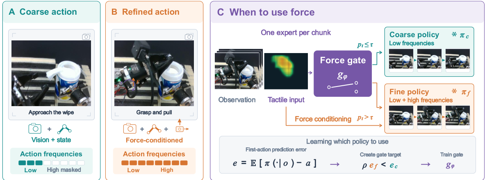
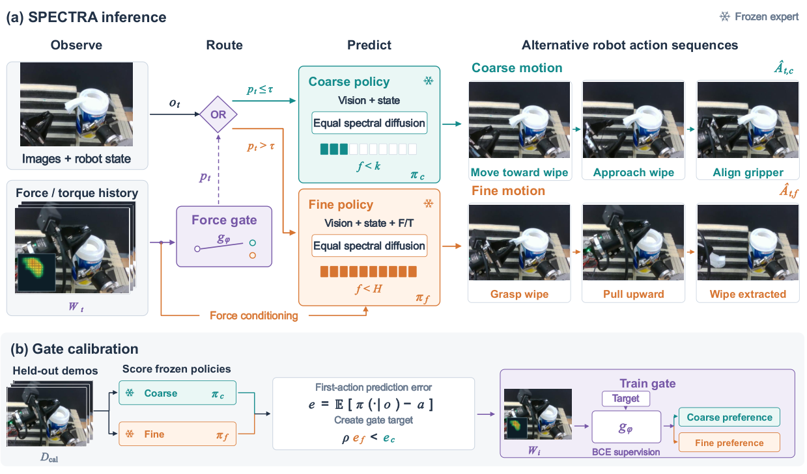
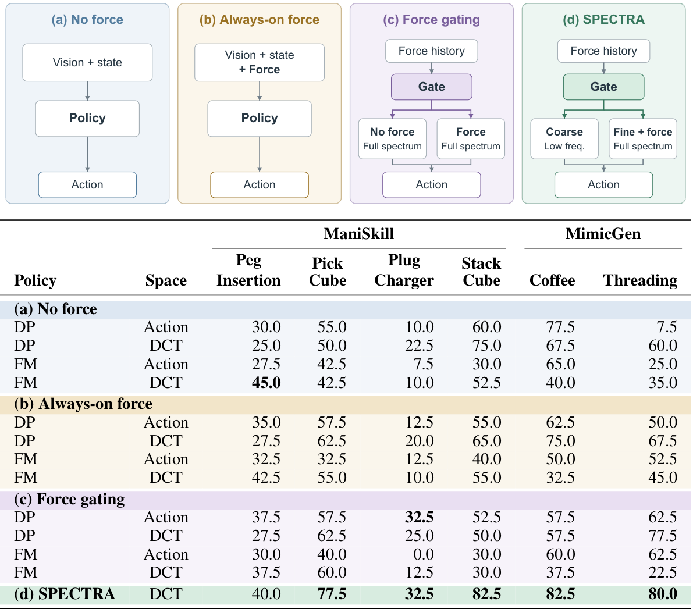
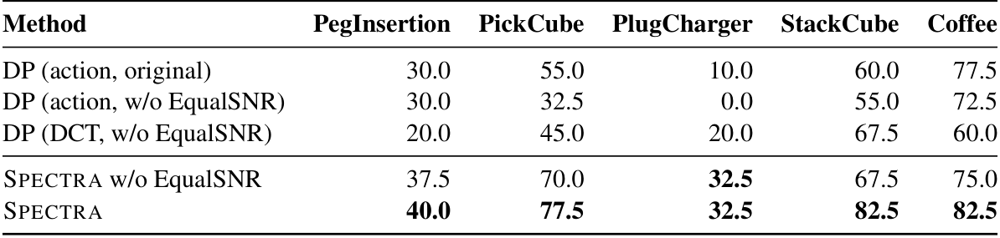
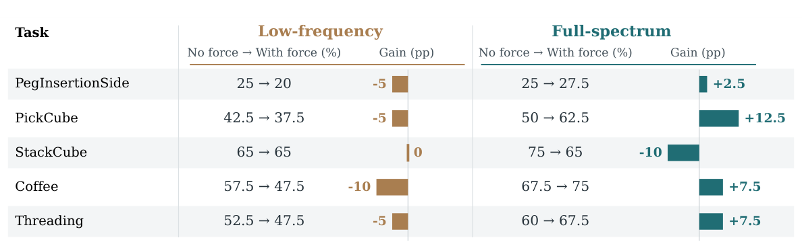
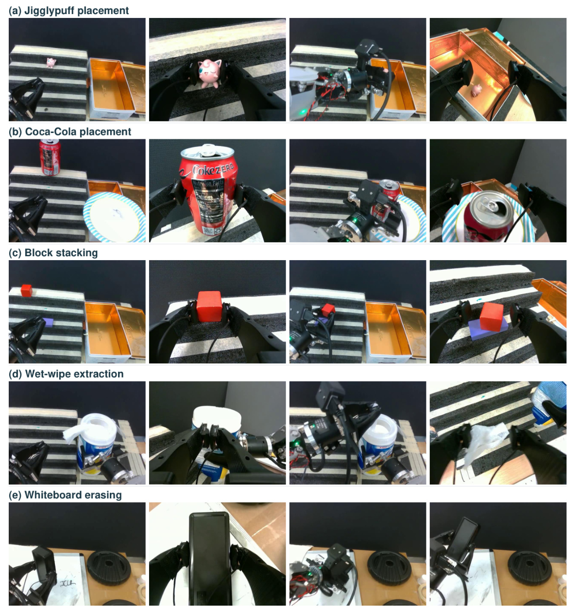
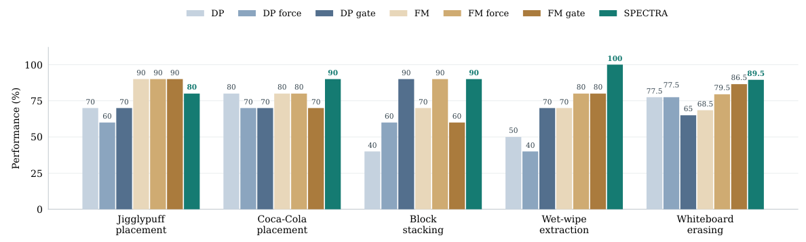

Abstract
Robot manipulation requires smooth movements as well as precise adjustments. Force and tactile feedback can help a robot understand its interaction with an object, especially when visual observations alone are insufficient. However, this feedback is not equally useful throughout a task. Similarly, predicting finer motion details can help the robot make necessary corrections, but can also reproduce noise in demonstrations. An effective policy should therefore learn when force feedback and finer motion are useful. We introduce SPECTRA, a force-aware spectral diffusion policy that makes this choice during execution. It combines a coarse policy for smooth, low-frequency motion with a fine policy that uses additional force/tactile feedback and can predict the full range of motion frequencies. A learned gate uses recent force history to select the policy that generates the next action chunk. Experiments on simulated and real-robot manipulation tasks show that SPECTRA improves real-robot task success by up to 20 percentage points over the strongest evaluated baseline on the corresponding task. Comparisons with individual policies further show that the benefit of force feedback depends on action bandwidth, supporting its selective use with fine motion prediction.
1 Introduction
Reliable robot manipulation requires both smooth movements and precise adjustments when grasping and handling objects. Visual observations help a robot locate objects and plan its motion, but they do not fully describe the interaction between the gripper and the object. Small misalignments, unexpected resistance, or changes in grip may be difficult to detect from images, especially when the gripper obscures the interaction. Force and tactile feedback provide complementary information that can help the robot detect these conditions and adjust its actions. This motivates force-aware manipulation policies that combine visual observations with feedback from physical interaction to achieve more reliable execution.
However, adding force and tactile inputs does not by itself ensure better actions. Their usefulness changes throughout execution: they may reveal an important interaction at one moment and provide little information beyond visual observations at another. Even when this feedback is informative, the policy must be able to translate it into suitable corrections. Restricting predictions to smooth motion can limit rapid adjustments, while allowing finer motion detail can also reproduce unwanted variation in demonstrations. These challenges connect the use of sensory information with the actions a policy can express. An effective approach should therefore consider both when force feedback is useful and when additional motion detail is needed.
We use the frequency content of action sequences to control motion detail: low frequencies describe smooth motion, while higher frequencies allow faster changes that may support corrections. Our key idea is to adapt this detail together with force feedback, using coarse motion when sufficient and enabling force-conditioned, full-spectrum prediction when it improves action prediction. Learning this choice from data accommodates changing task demands.
We introduce SPECTRA, a force-aware spectral diffusion framework with independently trained coarse and fine policies. The coarse policy predicts low-frequency motion; the fine policy uses force/tactile memory and predicts the full action spectrum. Coefficient-wise normalization balances spectral signal-to-noise ratios during training. A gate uses recent force history to select one policy per action chunk, learning from their relative prediction errors on held-out demonstrations without manually labeled contact phases. Simulation and real-robot experiments demonstrate gains across multiple tasks, including real-robot improvements of up to 20 percentage points over the strongest baseline per task. Ablations support both spectral balancing and the connection between force benefits and high-frequency action support. Our main contributions are as follows:
- We propose SPECTRA, a force-aware spectral diffusion framework that combines a coarse policy for low-frequency motion with a force-conditioned fine policy that predicts the full action spectrum.
- We introduce a learned gate that uses recent force history to select between the two policies. Supervision comes from their relative prediction errors on held-out examples, without requiring manually labeled contact phases.
- We validate SPECTRA in simulation and on real robots, showing gains over force-blind and force-aware baselines. Ablations support jointly selecting force conditioning and action bandwidth.


3 SPECTRA: Force-Aware Spectral Diffusion


3.1 Problem Setup and Overview
We study imitation learning for contact-rich manipulation, where force feedback reveals visually ambiguous constraints but varies in usefulness and may introduce spurious correlations under limited demonstrations. We therefore jointly learn action prediction and when to use force-aware control.
At time , let contain camera observations, proprioception, and task context, and let contain force, torque, and optional contact-force measurements. Their recent history is . The policy predicts an -step chunk , with continuous-motion and gripper dimensions and .
SPECTRA combines a force-blind coarse policy , restricted to low-frequency DCT coefficients, with a force-aware fine policy that models the full spectrum. Both preserve full temporal resolution for gripper commands. As shown in Figure 2, we train the policies independently on , freeze them, and compare their prediction errors on held-out calibration data . These comparisons supervise a gate that selects one policy per new action chunk, jointly determining force conditioning and spectral support.
3.2 Spectral Action Representation
To control the motion detail available to the coarse and fine policies, we use the discrete cosine transform (DCT) to express each action sequence as a weighted sum of cosine curves. Slowly varying curves capture the overall motion, while faster-varying curves capture sharper changes. Let contain the normalized continuous actions and contain the normalized gripper commands. The orthonormal DCT-II computes the frequency coefficients as
Here is the continuous-action vector at step within the chunk, and contains its coefficients at frequency index . The normalization factors are and for . The coarse policy keeps only the lowest-frequency coefficients, producing smooth action chunks, while the fine policy can use all coefficients to capture faster changes. Gripper commands remain in the time domain, preserving a prediction at every step.
Inspired by EqualSNR Falck et al. (2025), we rescale the frequency coefficients so that diffusion noise affects them more evenly. Some coefficients vary much less than others across demonstrations, so the same amount of noise can hide their information sooner. We therefore put the coefficients on a common scale before adding noise:
where division is element-wise and contains the standard deviation of each frequency coefficient in each action dimension. Each policy estimates these values from its first training batch and keeps them fixed. We set a minimum value of to avoid division by zero. This scaling gives the coefficients approximately equal variance, making the added noise comparable relative to their variation. We then train the diffusion model on , which combines the rescaled motion coefficients with the normalized gripper commands. After sampling, we multiply the predicted coefficients by to restore their original scales, then apply the inverse DCT to recover the continuous actions.
3.3 Coarse and Fine Diffusion Policies
Using the representation , we train the coarse and fine policies independently on . Both receive the current observations —camera images, proprioception, and task context—while the fine policy additionally receives the force/tactile memory . At a sampled diffusion step , we construct the noisy input , where controls the signal–noise balance and is independent standard Gaussian noise. The policies predict this noise as
with respective parameters and . Each predictor comprises an observation encoder and a conditional one-dimensional U-Net. The coarse policy uses the observation embedding directly; the fine policy augments it with information retrieved from through cross-attention before conditioning the U-Net.
We control motion detail through a binary loss mask , shaped like , for each policy . The coarse mask retains only the lowest frequencies of each continuous-action dimension and all gripper entries; the fine mask retains every entry. Both policies minimize
where denotes element-wise multiplication, the mean covers the full action tensor, and the expectation averages over demonstrations, diffusion steps, and noise. Both policies generate complete action chunks. Before decoding, we zero the coarse policy’s excluded coefficients, restricting its continuous predictions to low frequencies, while retaining the fine policy’s full spectrum. Further details are provided in Appendix D.
3.4 Learning the Force Gate
After training, we freeze both policies and use their relative prediction errors to supervise the gate. For each calibration example in , we sample a chunk from each policy and compare it with the demonstrated chunk in the same action coordinates and scale:
Here is the mean squared prediction error, and favors the fine policy. The parameter controls the selection margin; with , the fine policy must improve prediction accuracy sufficiently to be preferred.
The gate maps the flattened force/tactile memory to using a small multilayer perceptron with a sigmoid output, where denotes its parameters. We train it with binary cross-entropy:
We split the calibration examples into gate-training and gate-validation subsets, using the former for the expectation above and the latter for checkpoint selection. Both action policies remain frozen. At deployment, the gate requires only to predict which policy to select.
3.5 Gated Action Generation
At each replanning step, the gate computes and selects the policy that generates the next action chunk:
where is the gate threshold. The selected policy generates the entire chunk, including gripper commands. Its continuous-action coefficients are rescaled and decoded through the inverse DCT. The controller then executes a prefix of the decoded chunk before replanning, while updating the force/tactile memory at every control step. This allows policy selection to change as the interaction unfolds.
4 Experiments
We evaluate how force feedback, action frequency, and learned policy selection affect manipulation performance through four hypotheses:
- H1 (the value of force): Force feedback improves task success on some tasks but can reduce it on others.
- H2 (balanced spectral learning): Balancing signal-to-noise ratios across action frequencies improves task success.
- H3 (force and motion detail): Force feedback provides greater benefit when a policy can predict the full action spectrum than when it is restricted to low-frequency motion.
- H4 (learned policy selection): A gate trained from relative prediction errors improves task success over fixed or contact-triggered selection between the same coarse and fine policies.
4.1 Simulation Experiments
We evaluate SPECTRA on four ManiSkill Mu et al. (2021) tasks (PegInsertionSide, PickCube, PlugCharger, and StackCube) and two MimicGen tasks (Coffee and Threading). Each task uses 100 demonstration episodes: 50 for policy training and 50 for gate calibration. Both suites run in MuJoCo, with ManiSkill tasks adapted to this simulator. Force-aware policies receive three-axis force and torque measurements from a simulated sensor between the arm and parallel-jaw gripper; MimicGen measurements are recovered by restoring recorded simulator states. ManiSkill additionally sums the 3D force magnitudes over all gripper contacts using mj_contactForce, giving seven force-related channels versus six for MimicGen. We report task success rates on independently generated scene configurations.
4.1.1 Baselines and Ablations
We compare Diffusion Policy (DP) and flow matching (FM) in action and DCT space (Table 1). For each configuration, No Force uses vision and proprioception, Always-on Force adds force throughout execution, and Force Gating selects between force-blind and force-aware policies with full action support. SPECTRA jointly selects sensing and motion detail through a force-blind low-frequency policy and a force-conditioned full-spectrum policy. Ablations remove coefficient-wise spectral normalization and cross force conditioning with low-frequency and full-spectrum prediction to assess normalization and bandwidth-dependent force benefits. We also compare learned routing with fixed, random, force-threshold, and contact-triggered selection, holding the coarse and fine policies fixed.


4.1.2 Results and Analysis
Table 1 shows that SPECTRA outperforms force-blind action-space DP and FM on all six tasks. It achieves the highest success rates on PickCube, StackCube, Coffee, and Threading, and ties the best result on PlugCharger. Its mean success rate is 65.8%, compared with 52.9% for always using the fine policy and 50.0% for the strongest generic force-gating baseline, corresponding to gains of 12.9 and 15.8 percentage points, respectively. PegInsertionSide remains an exception: force-blind DCT-space FM achieves 45.0%, compared with 40.0% for SPECTRA.
Matched comparisons reveal benefits from force feedback, which validate H1 (the value of force). On Threading, adding force raises action-space DP success from 7.5% to 50.0% and FM success from 25.0% to 52.5%. However, the same change reduces Coffee success from 77.5% to 62.5% for DP and from 65.0% to 50.0% for FM, motivating selective use of force. The improvement over always selecting the same fine policy supports H4 (learned policy selection) against the always-fine baseline: learned selection achieves higher success than using force-conditioned, full-spectrum prediction throughout execution. Generic force gating nevertheless provides mixed benefits: for DCT-space DP, it improves Threading success over always-on force from 67.5% to 77.5%, but reduces Coffee success from 75.0% to 57.5%. These results support the combined design of SPECTRA, which adapts force conditioning and action bandwidth together.
Ablations
4.1.3 Effect of Spectral Signal-to-Noise Balancing
We compare SPECTRA with and without coefficient-wise spectral normalization, alongside action-space and DCT-space diffusion baselines. Table 2 shows that normalization improves success on four of the five tasks and leaves PlugCharger performance unchanged. The largest gain is on StackCube, from 67.5% to 82.5%, followed by gains of 7.5 percentage points on both PickCube and Coffee. The complete method also outperforms the listed diffusion baselines on every task. These comparisons demonstrate consistent benefits to task success, which validate the task-success component of H2 (spectral noise balancing). Frequency-resolved prediction errors are still needed to establish whether normalization improves fine-action learning while preserving coarse-motion accuracy.


4.1.4 Interaction Between Force and Action Bandwidth
We compare low-frequency and full-spectrum policies with and without force conditioning, keeping expert selection disabled to isolate the interaction between force and action bandwidth. Figure 3 shows that adding force provides no gain under low-frequency restriction, but improves full-spectrum success on four of five tasks. On PickCube, the effect of force changes from a 5-percentage-point decline to a 12.5-percentage-point gain when the full spectrum is available. StackCube is the exception: force leaves low-frequency performance unchanged and reduces full-spectrum success by 10 percentage points. These results validate H3 (force and action bandwidth) on four tasks, showing that access to finer motion detail can increase the benefit of force feedback. They motivate adapting force conditioning and action bandwidth together, while highlighting that full-spectrum prediction does not guarantee a benefit from force or establish its relevance exclusively to high-frequency motion.


4.2 Real-Robot Experiments
We evaluate SPECTRA on an OpenArm robot equipped with a fixed camera and a wrist-mounted camera. Tasks include Jigglypuff placement, Coca-Cola placement, block stacking, wet-wipe extraction, and whiteboard erasing (Figure 4). Coca-Cola placement requires placing the can without making an audible sound, making gentle contact part of the success criterion. Whiteboard erasing measures the percentage of text removed; the other tasks are evaluated by task success. We compare against force-blind, action-space Diffusion Policy (DP) and flow matching (FM), with additional force-conditioning and representation comparisons reported in the appendix.
4.2.1 Experimental Setup
We evaluate SPECTRA on an OpenArm robot equipped with a fixed camera and a wrist-mounted camera across five tasks: Jigglypuff placement, Coca-Cola placement, block stacking, wet-wipe extraction, and whiteboard erasing (Figure 4). For each task, we collect 80 demonstration episodes, using 40 for policy training and 40 for gate calibration. Coca-Cola placement additionally requires placing the can without an audible contact sound, making gentle placement part of the success criterion. We evaluate whiteboard erasing by the percentage of text removed and the remaining tasks by success rate. We compare against force-blind, action-space Diffusion Policy (DP) and flow matching (FM), with additional comparisons of force conditioning and action representation provided in the appendix.


4.2.2 Results and Analysis
The five tasks test distinct demands on force-aware control. Jigglypuff placement and block stacking require accurate positioning and controlled release, while Coca-Cola placement requires gentle contact without audible sound. For wet-wipe extraction, a drop in resistance can signal complete removal. Whiteboard erasing requires sustained contact and consistent pressure against the board.


Figure 5 shows that SPECTRA outperforms force-blind DP and FM on four of five tasks. Wet-wipe extraction reaches 100% success, compared with 50% for DP and 70% for FM; quiet Coca-Cola placement reaches 90%, versus 80% for both baselines. Whiteboard erasing removes 89.5% of the text, compared with 77.5% for DP and 68.5% for FM. Jigglypuff placement is the exception: SPECTRA achieves 80% success, exceeding DP but below FM’s 90%. Together with matched simulation comparisons, these results support H1 (the value of force). The physical experiments evaluate the complete framework, while simulation ablations isolate the contributions of force conditioning, action bandwidth, and spectral normalization.
5 Conclusion
SPECTRA jointly adapts force conditioning and action bandwidth by selecting between coarse force-blind and full-spectrum force-conditioned policies. Spectral normalization balances signal-to-noise ratios, while held-out prediction errors supervise selection without manually labeled contact phases. Simulation and real-robot experiments demonstrate gains across multiple tasks. Ablations support spectral normalization and show greater force benefits with full-spectrum prediction on four of five tasks.
Limitations and Future Work. Performance remains task dependent, and offline prediction errors may not fully reflect execution success. The gate also selects between two policies with fixed spectral support. Future work will explore outcome-based gate supervision, adaptive action bandwidth, and generalization to new objects, sensing conditions, and robot platforms.
AI Use Statement
We use generative AI tools, including ChatGPT and Codex, to assist with language polishing, code development, and figure design, layout, and formatting. The authors are responsible for the research ideas, methodology, experimental design, and interpretation of results, and review and revise AI-assisted material before inclusion. Reported experimental results come from policy evaluations rather than AI-generated estimates. Generative AI is not a component of the deployed SPECTRA policy. The authors take full responsibility for the final text, technical claims, code, and figures.
Reproducibility Statement
Section 3 describes the spectral action representation, coefficient-wise normalization, coarse and fine policies, and supervised gate calibration. Sections 4.1 and 4.2 describe the simulation and real-robot experiments, baselines, ablations, and evaluation metrics. Appendix A details the demonstration budget, force-measurement provenance, data splits, and evaluation initializations. Appendix B documents implementation settings, distinguishing source defaults from unresolved final configurations. Appendices C and D provide the analyses of torque variation and spectral signal-to-noise balancing, respectively. Appendix E reports the complete real-robot comparisons, and Appendix F describes the simulation tasks. Together, these materials specify the method and evaluation protocol while identifying implementation details that remain to be finalized for complete reproduction.
BibTeX
@unpublished{spectra,
title = {{SPECTRA}: Force-Gated Spectral Diffusion for Robot Manipulation},
author = {{Anonymous}},
note = {Paper under double-blind review}
}